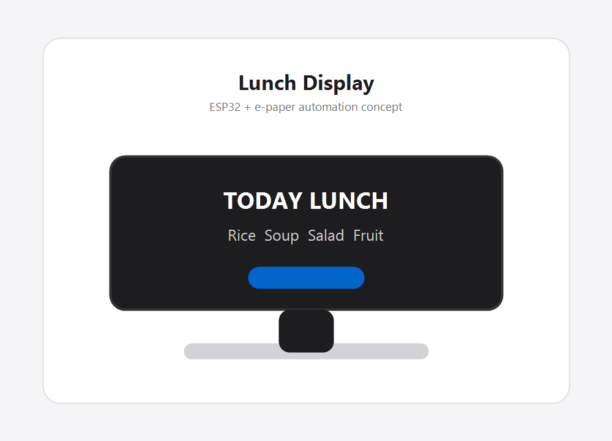
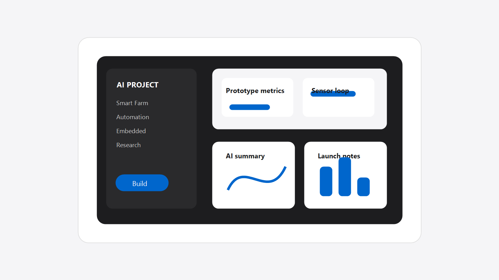
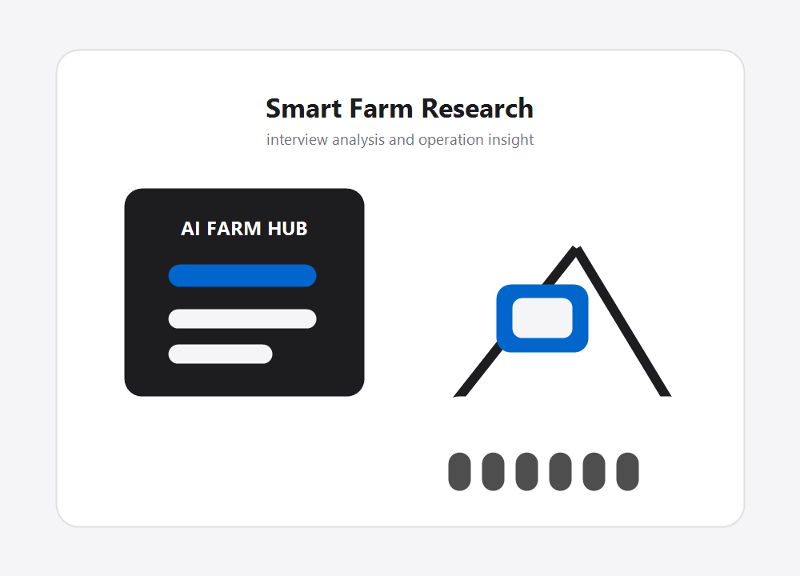
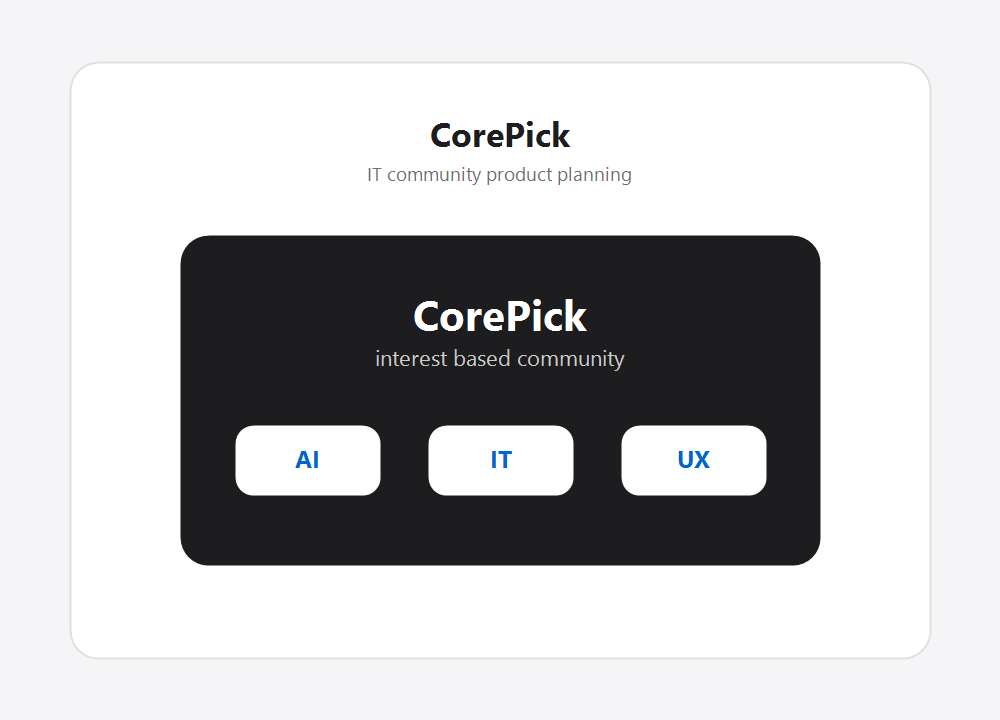
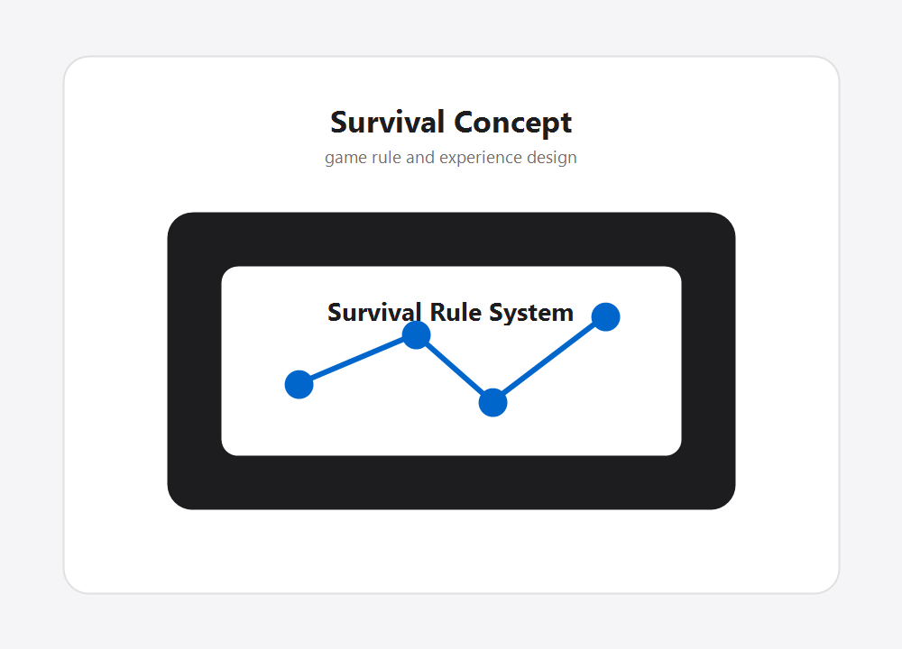

Embedded · Automation
급식 알리미
ESP32와 전자종이 디스플레이를 사용해 급식 정보를 자동으로 표시하는 저전력 안내 시스템을 기획했습니다.
AI · Automation · Smart Farm · Embedded
아이디어를 조사하고, AI로 정리하고, 자동화와 임베디드 시스템으로 실제 결과물까지 만드는 포트폴리오입니다.

문제를 발견하고 기술로 해결 과정을 설계하는 작업을 좋아합니다.
생성형 AI를 단순한 질문 도구가 아니라 조사, 기획, 콘텐츠 제작, 코드 작성, 프로토타이핑을 빠르게 연결하는 작업 파트너로 사용합니다. 스마트팜, 자동화, 전자종이 디스플레이, 커뮤니티 서비스 기획처럼 서로 다른 분야를 작은 프로젝트로 실험하며 결과물 중심으로 정리하고 있습니다.
직접 조사하고 설계한 프로젝트를 시각 자료와 함께 한눈에 볼 수 있도록 정리했습니다.

Embedded · Automation
ESP32와 전자종이 디스플레이를 사용해 급식 정보를 자동으로 표시하는 저전력 안내 시스템을 기획했습니다.

Research · Report
현장 전문가 인터뷰를 바탕으로 운영 인사이트와 기술 과제를 정리하고, 보고서 형태로 구조화했습니다.

Product · Community
관심사 기반 IT 커뮤니티 플랫폼을 기획하며 핵심 사용자 흐름, 화면 구성, 서비스 구조를 설계했습니다.

Game Design · Concept
생존 규칙과 환경 변화를 기반으로 새로운 플레이 경험을 설계하고, 규칙과 성장 흐름을 문서화했습니다.
AI를 사용하는 방식이 분명히 보이도록 작업 유형을 세 가지로 나눴습니다.
카드뉴스, 보고서, 이미지 콘셉트, 발표 자료처럼 실제 결과물로 확장 가능한 작업들입니다.
Next
앞으로도 AI를 결과물 제작의 속도를 높이는 도구로 사용하면서, 스마트팜, 자동화, 임베디드 시스템 분야에서 더 다양한 프로젝트를 실험할 계획입니다.